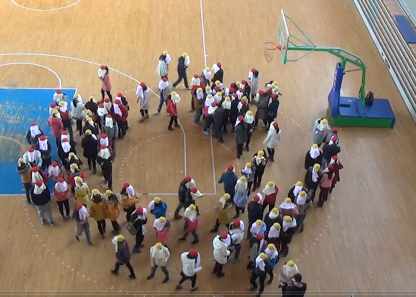
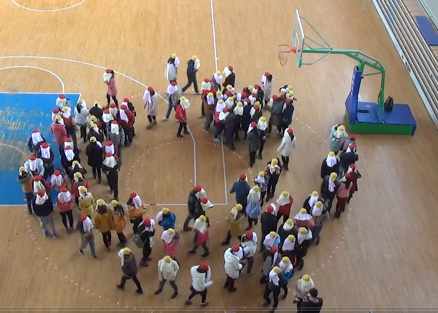
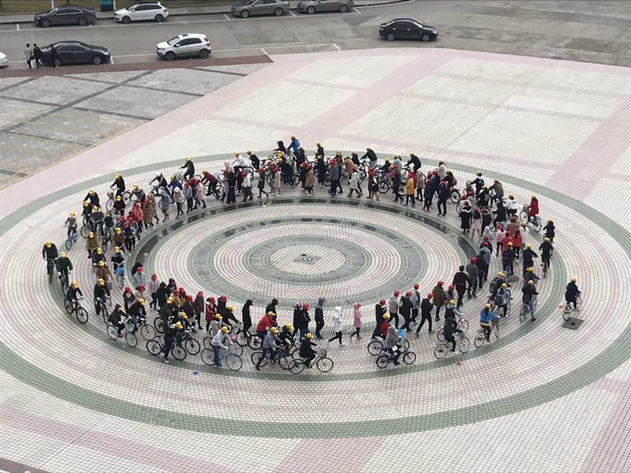
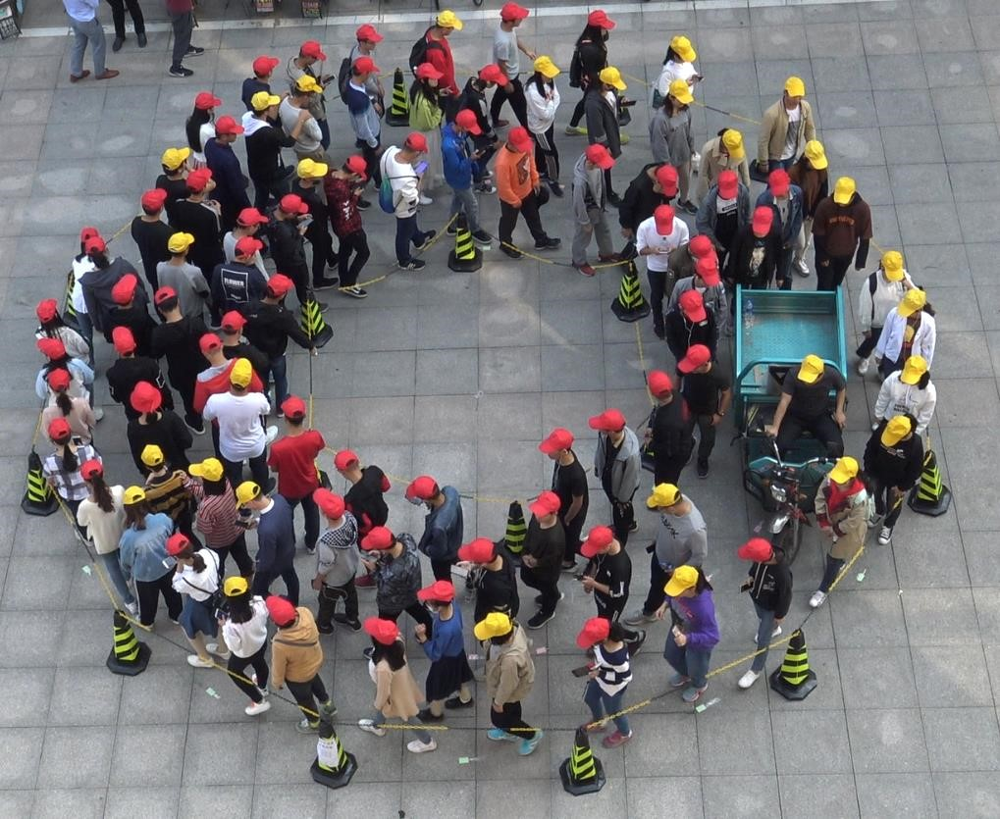
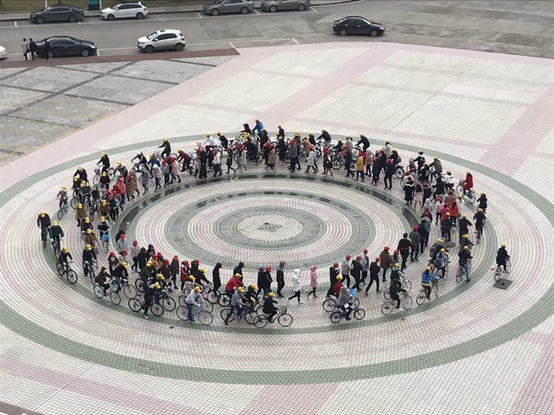
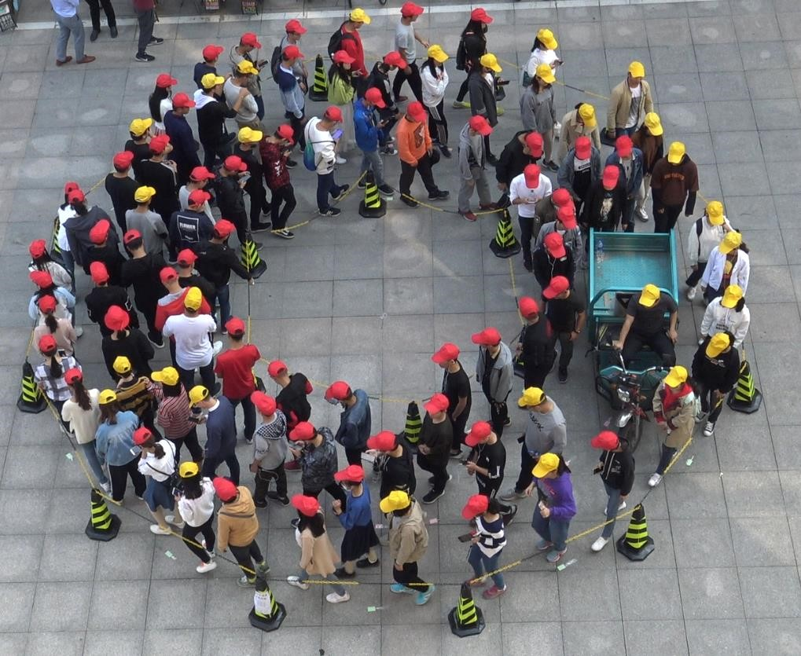

个人简介
郝庆一, 汉族, 1976年12月出生, 安徽六安人, 博士, 教授, 硕士生导师。
1999年至今在安庆师范大学从事教学科研工作。
2012年7月在中国科学技术大学获工学博士学位。
2007年7月在宁夏大学获理学硕士学位。
1999年7月在安庆师范学院获学士学位。
研究方向: 复杂系统、交通流理论和博弈论等。
学术论文
Qing-Yi Hao*, Rui Jiang, Mao-Bin Hu, Chao-Yun Wu, and Ning Guo, Analytical investigation on totally asymmetric simple exclusion process
with Langmuir kinetics and a parallel update with two sub-steps, Chaos, Solitons and Fractals 160, 112233(2022).
https://doi.org/10.1016/j.chaos.2022.112233 (SCI一区）
Xiang Ling, Wen-Bin Ju, Ning Guo, Kong-Jin Zhu, Chao-Yun Wu and Qing-Yi Hao,
Effects of topological characteristics on rhythmic states of the D-dimensional Kuramoto model in complex networks,Chaos 32, 013118 (2022).
https://aip.scitation.org/doi/10.1063/5.0058747. (SCI二区)
Ning Guo, Rui Jiang, SC Wong, Qing-Yi Hao, Shu-Qi Xue, Mao-Bin Hu, Bicycle flow dynamics on wide roads: Experiments and simulation, Transportation Research Part C: Emerging Technologies 125,103012(2021).
https://doi.org/10.1016/j.trc.2021.103012.(SCI一区)
Qing-Yi Hao*, Jia-Li Qian, Chao-Yun Wu, and Ning Guo, Phase behaviors of counterflowing stream of pedestrians with site-exchange in local vision and environment, Physica A 567, 125688(2021).(SCI二区)
Chao-Yun Wu, Mao-Bin Hu*, Rui Jiang, Qing-Yi Hao, Effects of road network structure on the performance of urban traffic systems, Physica A 563,125361(2021). (SCI二区）
Qing-Yi Hao*, Rui Jiang, Mao-Bin Hu, Chao-Yun Wu, Hai Zhang, Bing-Bing Liu and Ning Guo, Investigation of attractive interactions in a self-driven unidirectional two-channel model with periodic and open boundaries, J. Stat. Mech. 083302(2020). (SCI二区）
Ning Guo , Rui Jiang*, S.C. Wong*, Qing-Yi Hao, Shu-Qi Xue, Yao Xiao, Chao-Yun Wu, Modeling the interactions of pedestrians and cyclists in mixed flow conditions in uni- and bidirectional flows on a shared pedestrian-cycle road, Transportation Research Part B 139 , 259–284(2020). (SCI一区）
Qing-Yi Hao*, Rui Jiang, Mao-Bin Hu,Chao-Yun Wu, Yunxin Zhang, Ning Guo, Theoretical analysis and simulation of phase separation in a driven bidirectional two-lane system, Physical Review E 100, 032133 (2019). (SCI二区）
Chao-Yun Wu, Jie Chen, Qing-Yi Hao, Ming Li Mao-Bin Hu*, Improve traffic efficiency with advanced travel time feedback in urban networks, Journal of Statistical Mechanic, 023404(2019). (SCI二区）
HaiZhang, Qing-Yi Hao, Eisenhart lift for Euler' problem of two fixed centers, Applied Mathematics and Computation 350,305–312(2019). (SCI一区）
Ning Guo, Rui Jiang*,Qing-Yi Hao, Mao-Bin Hu, Bin Jia. Impact of holding umbrella on uni- and bi-directional pedestrian flow: experiments and modeling. Transportmetrica B 7(1): 897-914(2019). (SCI三区）
Qing-Yi Hao*, Rui Jiang,Chao-Yun Wu,Ning Guo,Bing-Bing Liu, Yunxin Zhang, Theoretical analysis and computer simulation of dynamic processes for a driven diffusive two-lane system, Physical Review E 98, 062111(2018). (SCI二区）
Chao-Yun Wu, Ming Li，Rui Jiang,Qing-Yi Hao, Mao-Bin Hu*, Perimeter control for urban traffic system based on macroscopic fundamental diagram, Physica A 503, 231–242 (2018). (SCI三区）
Qing-Yi Hao*, Rui Jiang, Mao-Bin Hu, Bin Jia. Dual phase separation in a two-dimensional driven diffusive system, Physics Letters A 381, 1543–1547 (2017). (SCI)
Ning Guo,Qing-Yi Hao, Rui Jiang, Mao-Bin Hua, Bin Jia. Uni- and bi-directional pedestrian flow in the view-limited condition: Experiments and modeling, Transportation Research Part C 71, 63–85 (2016). (SCI)
Qing-Yi Hao*, Zhe Chen, Xiao-Yan Sun, Bing-Bing Liu, and Chao-Yun Wu. Theoretical analysis and simulation for a facilitated asymmetric exclusion process. Physical Review E 94, 022113 (2016). (SCI)
Qing-Yi Hao, Rui Jiang, Mao-Bin Hu, Bin Jia and Wen-Xu Wang. Exponential decay of spatial correlation in driven diffusive system: A universal feature of macroscopic homogeneous state, Scientific Reports 6, 19652 (2016).
(SCI JCR : Q 1)
Qing-Yi Hao, Rui Jiang*, Mao-Bin Hu and Qing-Song Wu, Mean-field analysis for parallel asymmetric exclusion process with anticipation effect, Physical Review E 82, 026113 (2010). (SCI JCR : Q 1)
Qing-Yi Hao, Mao-Bin Hu, Xue-Qi Cheng, Wei-Guo Song, Rui Jiang* and Qing-Song Wu, Pedestrian flow in a lattice gas model with parallel update, Physical Review E 82, 022103 (2010). (SCI JCR: Q 1，他引11次)
(SCI JCR: Q 1，他引11次)
Qing-Yi Hao, Rui Jiang, Mao-Bin Hu, Bin Jia and Qing-Song Wu, Pedestrian flow dynamics in a lattice gas model coupled with an evolutionary game, Physical Review E 84, 036107 (2011). (SCI JCR: Q 1，他引26次)
Qing-Yi Hao, Rui Jiang, Mao-Bin Hu and Qing-Song Wu, Unidirectional pedestrian flow in a lattice gas model couple with game theory, IEEE, 2011. ( EI )
Kai-Xuan Zhu, Nian Wang, Qing-Yi Hao, Qi-Yi Liu and Rui Jiang, Weakening interaction suppresses spontaneous symmetry breaking in two-channel asymmetric exclusion processes, Physical Review E 85, 041132 (2012). (SCI JCR: Q 1)
Xiao-Yan Sun, Rui Jiang, Qing-Yi Hao and Bing-Hong Wang, Phase transition in random walks coupled with evolutionary game, Europhysics Letters 92, 18003 (2010). (SCI JCR: Q 1，他引8次)
Xiao-Yan Sun, Qing-Yi Hao , Mu-Ren Liu and Bing-Hong Wang, Flow improvement by providing partial traffic information for road users, International Journal of Modern Physics C 22(2)，1-9 (2011) . (SCI JCR: Q3)
科研项目
1. 主持安徽省自然科学基金面上项目：视野受限情形下的行人流及相关复杂系统的建模与实验研究（1908085MA22，在研）.
2. 主持2014年安徽省教育厅自然科学基金重点项目：基于演化博弈的地铁站行人流动态特性及拥堵机理研究（KJ2014A139，已结题）.
3. 主持安徽省2014年高校优秀青年人才支持计划项目（已结题）.
4. 作为主要参研人参研国家自然科学基金面上项目：复杂网络上多尺度动力学粗粒化方法的发展与应用（11475003，已结题）.
5. 作为主要参研人参研国家自然科学基金面上项目：建筑火灾人群疏散中行人的微观运动特征分析与建模（51178445，已结题）.
6. 作为主要参研人参研国家自然科学基金面上项目：交通瓶颈特征与拥堵交通形态间的相关性研究（11072239，已结题）.
教学情况
主讲课程
数值计算方法; 数学建模；数学实验; 数学软件选讲；数学分析；高等代数；高等数学；线性代数.
教学获奖
1. 荣获第二届安徽省高校数学微课程教学设计竞赛一等奖.
2. 荣获第二届全国高校数学微课程教学设计竞赛华东赛区二等奖.
3. 多次指导学生参加大学生数学建模竞赛并获奖，其中指导学生参加2013年全国大学生数学建模竞赛荣获全国一等奖.
教研项目
主持2019年安徽省高等学校省级质量工程项目：数学学科拔尖学生培养计划.
主持2015年校级教学质量与教学改革工程项目：基于智能手机平台的大学数学实验课程的设计与研究.
参与2014年省级质量工程项目：高等代数大规模在线开放课程（MOOC）示范课程.
参与2016年省级质量工程项目：高等数学教学团队.
联系方式
E-mail: haoqyi@126.com; haoqy@aqnu.edu.cn
 

 
